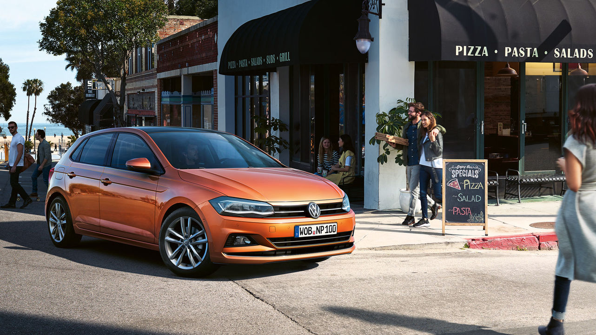

Volkswagen njemački je proizvođač automobila sa sjedištem u Wolfsburgu, savezna pokrajina Donja Saksonija. Osnovan je 1937.
i proizvodi najprodavanije automobile istoimene Volkswagen grupacije, holding preduzeća koje je osnovano 1975. s ciljem
daljnjeg razvoja ove kompanije.
Novi Touareg.
SUV nove generacije
Na sve strane zaštićen. Sa svih strana lijep.
Novi Polo pazi na vas. Još više sigurnosnih potpora nego u prethodnom modelu promatra sve što se zbiva oko vas. Pritom najviše
pozornosti privlači on sam. To može zahvaliti kompletnom dizajnu s niže postavljenom bočnom linijom, dinamičnim žljebovima
i glavnim svjetlima novog oblika. I to na svakom putovanju.

Prema statistici iz 2015. godine, Volkswagen je bio na drugom mjestu sa 9,993,600 proizvedenih automobila odmah iza japanskog
proizvođača automobila Toyota sa 10,083,783 proizvedenih automobila.
Polo. Za život pun avantura.
Volkswagen ima tri automobila na spisku 10 najprodavanijih automobila svih vremena, a to su: Golf, Buba i Passat. Ovaj podatak
se može naći na internet stranici pod nazivom 24/7 Wall St. S ova tri automobila Volkswagen ima više automobila na spisku
onih koji se i dalje proizvode nego bilo koji drugi proizvođač.
T-ROC. Ready to Roc.